Recessed blade engraving, layered stitched leather, aged bone, fine skull sutures and detailed fastenings. Straight staff and corrected skull mounting retained. Detail pass and source evidence. Original staff pose and outgoing white souls: FULL build and exact-source deployment verified at 23:07 Eastern. Ready for user playtest. Correction and evidence. These are source previews, not in-game screenshots.
Tier one retains Nan Sapwe. Tier two is a simple skull staff; tier three adds the spiked halo, spear finial, chased collar and carving. These previews use the exported model geometry and native texture maps. Lighting is an approximation; native appearance and casting remain subject to the user's playtest.
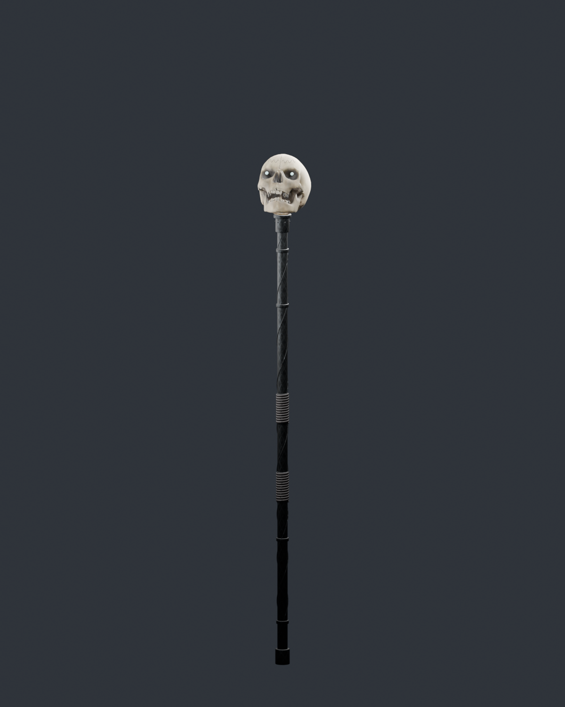
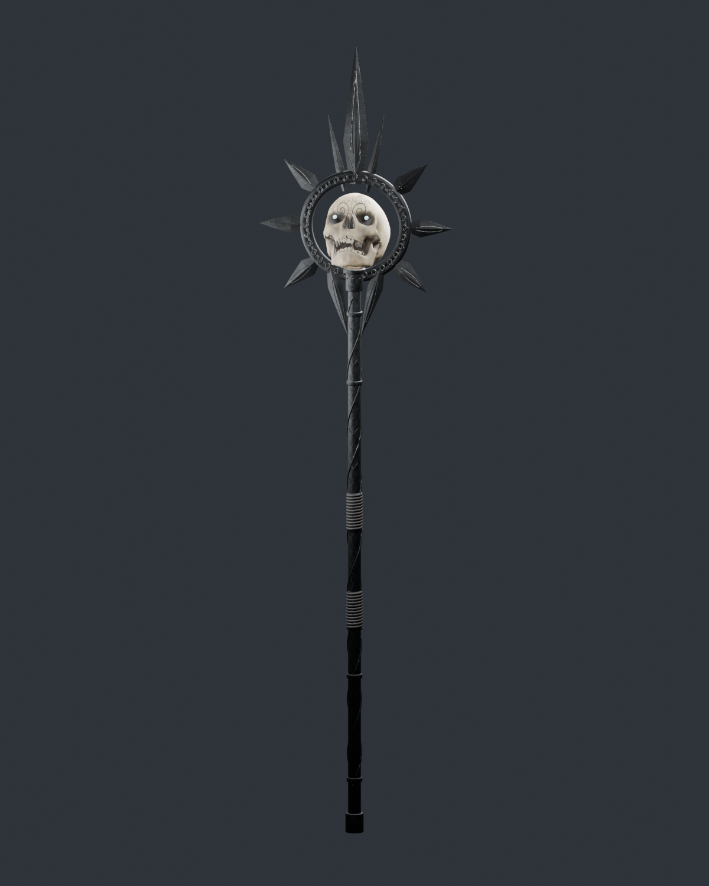
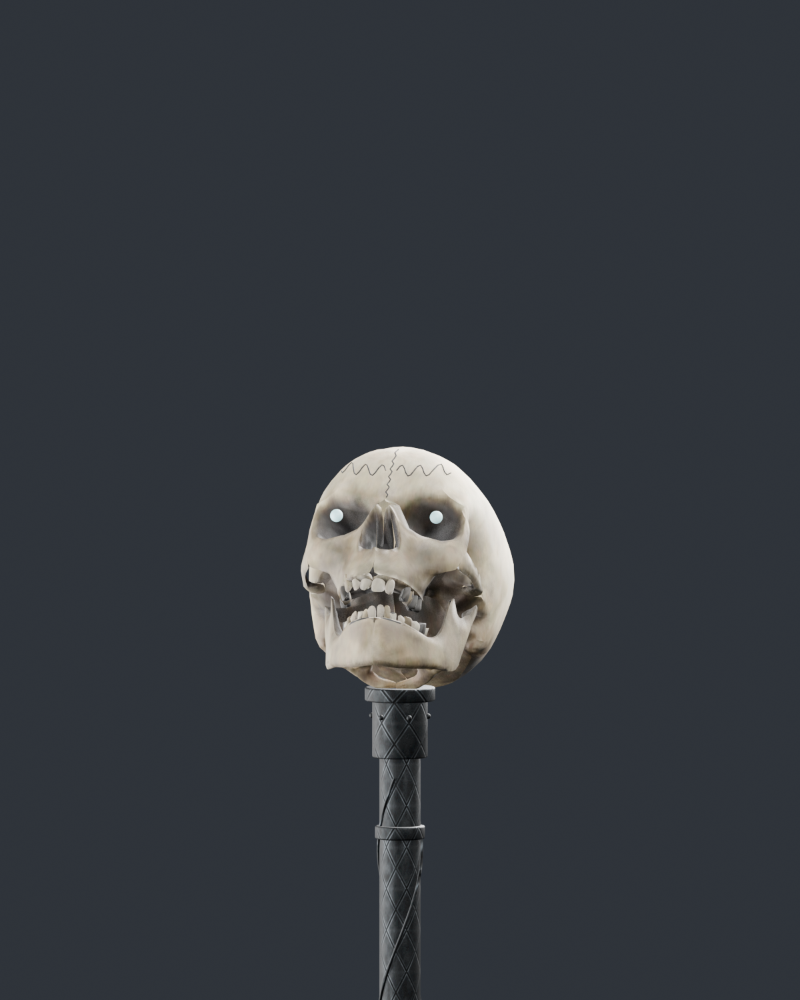
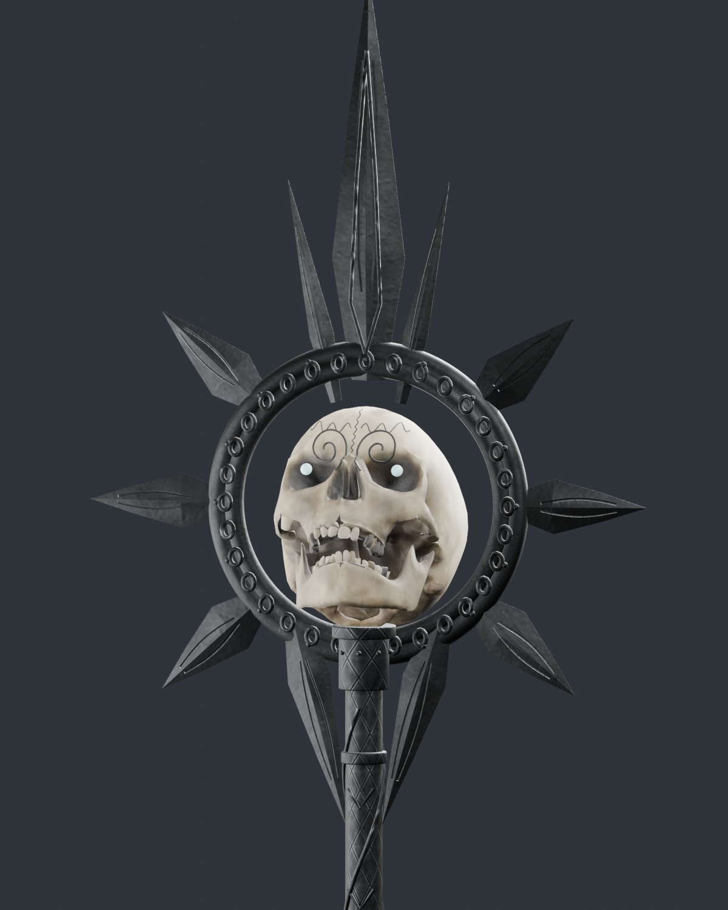
Close-ups of the exported bone, recessed blade channels and stitched leather. Native maps and authored geometry under neutral review lighting.
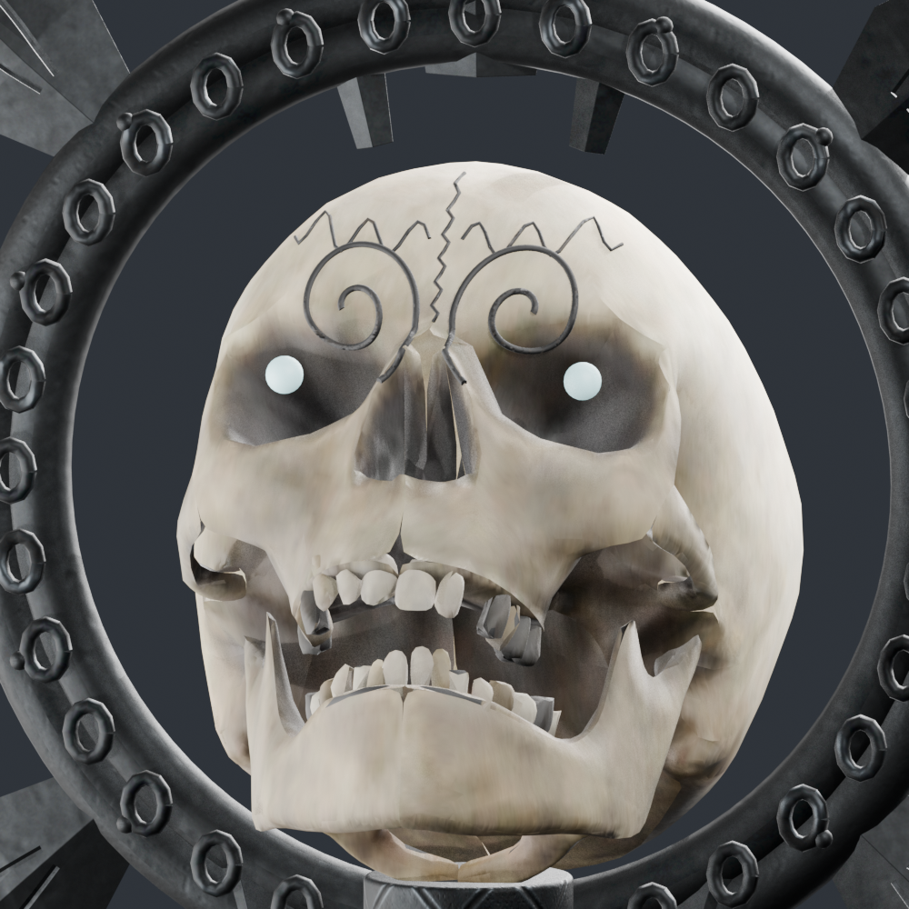
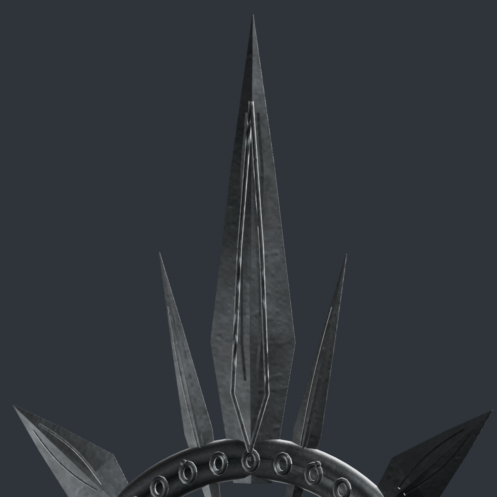
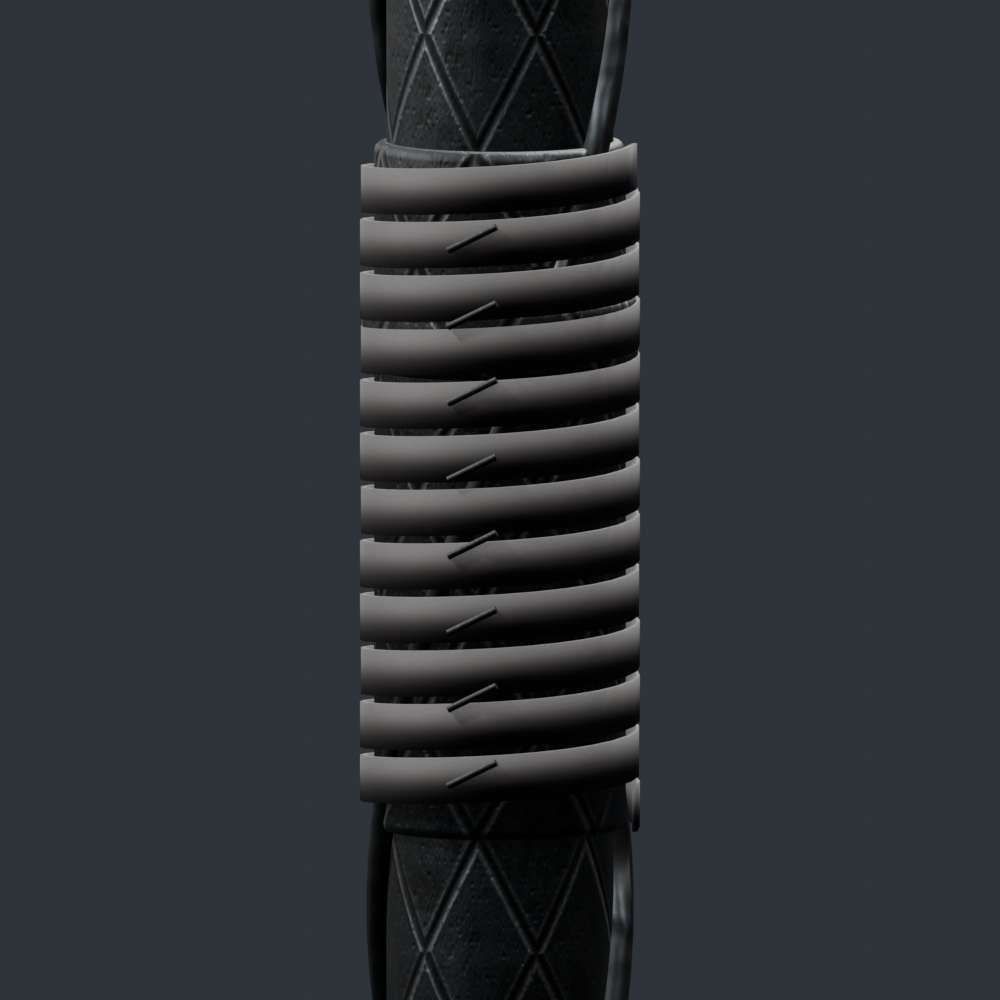
The original hand and weapon tracks are now unchanged. Same camera and hands in both images; the ice donor uses a neutral material.
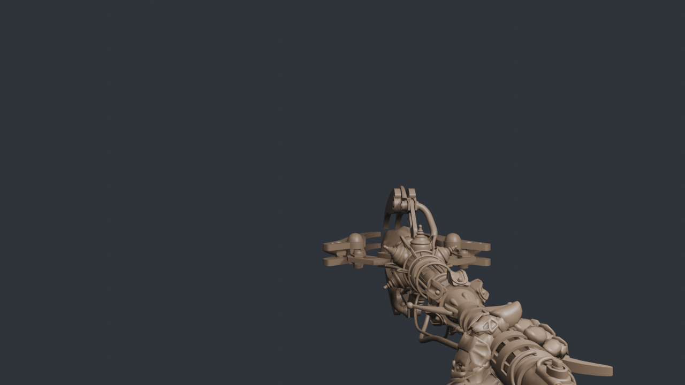
The weapon keeps the ice staff's movement and grip animation family, with fitted skull effect tags, continuous soul channeling and a short pulse thrust. The summon still shows the underlying grip only; native ADS layering is not reproduced here. Neutral hands in this rig preview show deformation and contact; the shipping staff inherits the player's viewhands just like the ice staff.
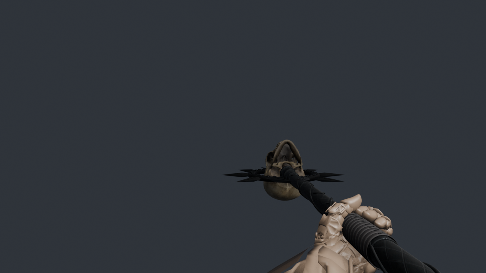
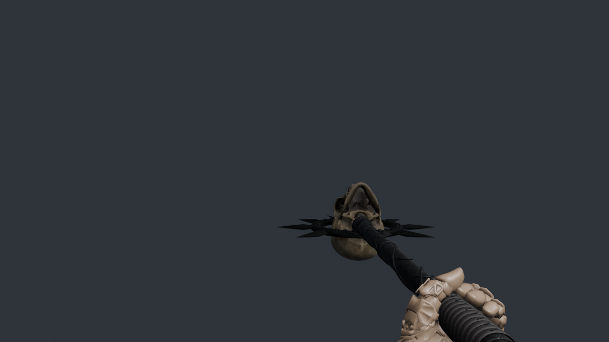
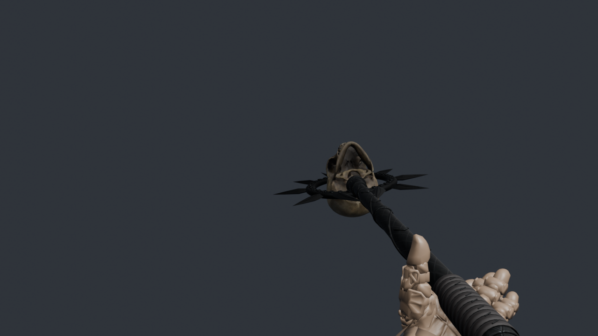
Composition preview at player height using the native smoke and symbol atlases. Particles travel outward, leaving the caster clear. Brightness is approximate; BO3 appearance awaits playtesting.
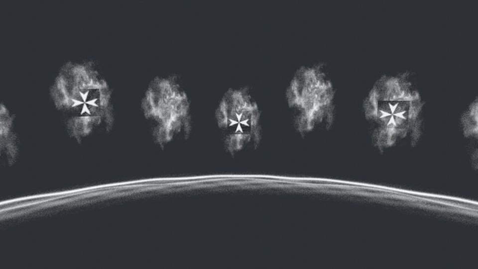
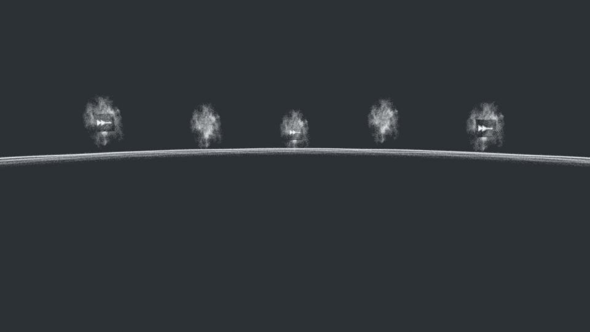
Exact exported clip samples: channel entrance, soul hold, release, then pulse thrust. Geometry and grip review only; live soul effects and BO3 lighting are not simulated.